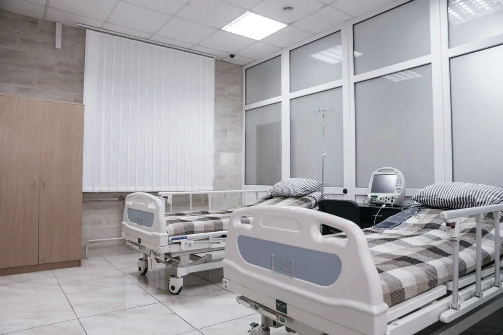
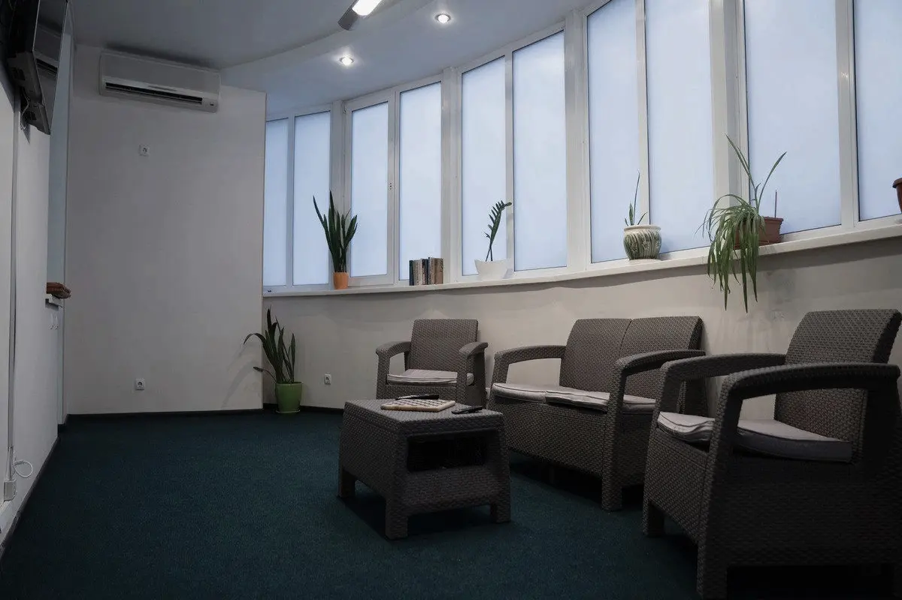
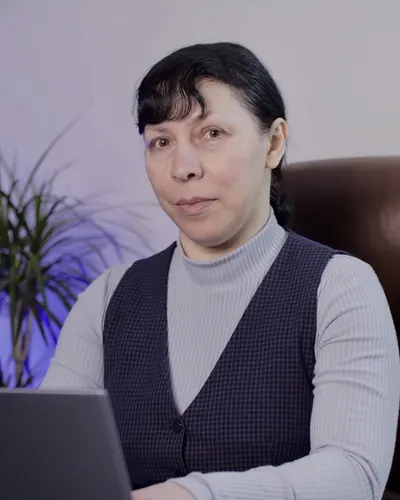
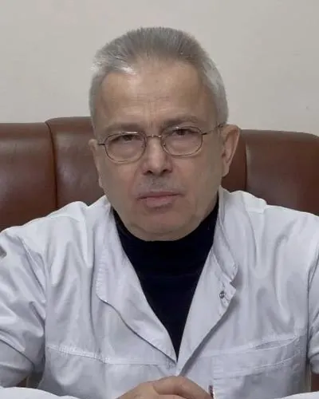
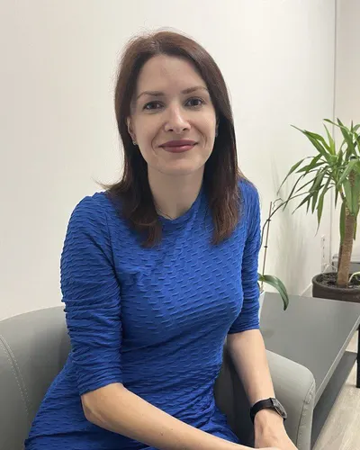

Приватна психіатрична й наркологічна клініка в Києві
Відповідаємо цілодобово. Анонімно й без постановки на облік.
Допомога зараз
-
Виклик психіатра додому
Лікар виїжджає до пацієнта за вашою адресою.
від 6 500 грн
Подзвонити -
Виведення із запою
Вдома або в стаціонарі клініки.
стаціонар від 7 000 грн за добу
Подзвонити -
Швидка психіатрична й наркологічна допомога
Дзвінок на гарячу лінію цілодобово.
вартість — після консультації
Подзвонити
Остаточна вартість визначається після консультації.
Напрями лікування
-
Тривога, депресія, безсоння
Неврози, тривожно-депресивні розлади, панічні атаки, безсоння, ПТСР
Детальніше: психіатрія дорослих (Розділ у розробці) -
Психози, БАР, шизофренія
Також розлади особистості
Детальніше: психіатрія (Розділ у розробці) -
Алкогольна залежність
Виведення із запою вдома та в стаціонарі, детоксикація, кодування
Детальніше: алкогольна залежність (Розділ у розробці) -
Наркотична залежність
Опіоїдна, метадонова, амфетамінова залежність, УБОД, зняття ломки
Детальніше: наркотична залежність (Розділ у розробці) -
Ігроманія
Ігроманія та комп'ютерна залежність
Детальніше: ігроманія (Розділ у розробці) -
Діти й підлітки
Дитяча психіатрія та дитячий психолог: РХП, ОКР, самоушкоджувальна поведінка, депресії підлітків
Детальніше: дитяча психіатрія (Розділ у розробці) -
Для родини
Сімейні консультації, робота зі співзалежністю
Детальніше: для родини (Розділ у розробці) -
Також
- Реабілітація (Розділ у розробці)
- Неврологія (Розділ у розробці)
- Онлайн-програми (Розділ у розробці)
Анонімно. Без постановки на облік.
- Гаряча лінія працює цілодобово й анонімно.
- Лікування без постановки на облік.
- Якщо говорити вголос важко — напишіть у Telegram.
Як усе відбувається
-
Звернення
Дзвінок на гарячу лінію або повідомлення в Telegram.
-
Консультація лікаря
Розмова і огляд, на які ви записуєтеся заздалегідь.
-
Діагностика
Обстеження, потрібні для вибору лікування.
-
Стаціонар або амбулаторно
Лікування в клініці або без госпіталізації.
-
Робота з психологом
Психологічна допомога — частина повного циклу.
Прийом — за попереднім записом.
Стаціонар

Палати стандарт, напівлюкс і люкс, відділення реанімації.
Клініка працює автономно: світло, вода й комфорт зберігаються під час відключень. Поруч є обладнане укриття.
Реабілітація — наркологічна, неврологічна й посттравматична.
Детальніше про стаціонар (Розділ у розробці)
Лікарі
-

Олена Володимирівна Новохатська
Лікар-психіатр вищої категорії. Досвід понад 25 років
-

Борис Борисович Івнев
Лікар-психотерапевт, доктор медичних наук, професор. Досвід понад 20 років
-

Вікторія Вікторівна Кравцова
Практичний психолог
У команді 18 фахівців: 7 лікарів, 9 психологів, старша медсестра і фельдшер.
Уся команда (Розділ у розробці)
Вартість
| Консультація психіатра або нарколога | 4 000 грн |
|---|---|
| Консультація психолога | 3 500 грн |
| Консультація провідних лікарів | 4 000–4 500 грн |
| Виклик психіатра додому | 6 500 грн |
| Стаціонар, алкогольна залежність і психіатрія, до 10 діб | 7 500 грн за добу |
| Стаціонар, від 10 діб | 7 000 грн за добу |
| Реабілітація, 30 днів | 5 700 грн за добу |
| Кодування | 6 500–15 000 грн |
Остаточна вартість — після консультації.
Усі ціни (Розділ у розробці)
Про клініку
Ліцензія МОЗ України №3491/21/Мвід 12.08.2021
«Сіон» — психіатричний напрям комплексу приватної клініки «Петра і Павла».
Повний цикл допомоги: від екстреної допомоги та виїзду додому до стаціонару й реабілітації. Психіатрія дорослих і дітей, лікування алкогольної, наркотичної залежності та ігроманії.
- Другий номер
- +38 067 105 53 14
- Адреса
- м. Київ, вул. Миколи Голего, 5
- Як дістатися
- Від станції метро «Шулявська» — 20–25 хвилин пішки. Від зупинки «Караваєві дачі» — 8–10 хвилин.
- Прийом
- Лише за попереднім записом: телефоном або в Telegram.